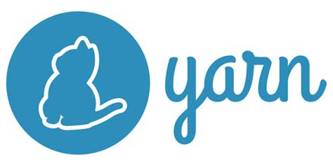

Universidad Nacional Experimental Del Táchira
Decanato De Docencia
Dpto. Ingeniería Informática
Introducción a Frameworks
Programación II (Cod. 0415405T)
Temas a tratar
- ¿Qué es un framework?
- ¿Por qué utilizar uno?
- Ejemplo de un framework en PHP
Conocimientos previos
- Desarrollo básico de aplicaciones web.
- Conocimientos de los componentes de una aplicación web
- Uso de patrones de diseño.
- Conocimientos básicos sobre Base de datos.
Objetivo de la clase
- Aprender que es un framework.
- Conocer escenarios donde se debe usar frameworks
- Descubrir los diferentes componentes de un marco de trabajo.
- Manejo de dependencias.
- Uso de un marco de trabajo.
¡Comencemos!
Introducción
- ¿Han notado que la base de las aplicaciones web es la misma?
- ¿Como hacer un sistema de login seguro? ¿Como implementar un protocolo de forma segura?
- ¿Como organizar correctamente un proyecto?
¿Qué es un marco de trabajo?
Es una abstracción de las funcionalidades génericas de un software. Donde al ir agregando código adicional se pueden desarrollar las funcionalidades específicas.
Un marco de trabajo consta de clases, funciones y herramientas, compiladores
Herramientas de un marco de trabajo
Los frameworks suelen incluir herramientas como:
- Generadores de código: CRUD, Modelos, Controladores, Módulos, etc.
- Plataforma para desarrollar pruebas.
- Migraciones de Base de Datos.
- Manejo de dependencias.
¡Observemos!
Herramientas para manejo de dependencias
- Son herramientas para administrar todas las librerias requeridas por una aplicación, de forma organizada y lógica.
- Permite instalar y actualizar dependencias en un proyecto complejo.
- Sirve para establecer el entorno de desarrollo.
Herramientas para manejo de dependencias
|
Composer (PHP) |
|

Yarn (JavaScript) |

Maven (Java) |
||
Humor
Como se siente un programador al probar un framework la primera vez.